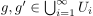
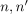
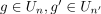
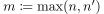
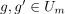
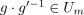

Vereinigung von einer Kette von Gruppen als Gruppe
1. Satz
 eine
eine  eine
eine 2. Beweis
nach dem Kriterium für eine Untergruppe ist zu zeigen:
2.2. abgeschlossenheit
seien , so existieren  mit  Man wähle  und es folgt nach Annahme . Da Um$ eine Gruppe ist, folgt  und damit ist das kriteum erfüllt.